ABOUT
The project started in a course where we had to solve personal problems. Mine was keeping track of my expenditure since coming to hostel. I tried a Google Sheets ledger, but updating it every day got tedious. Could my payment data be easier to keep up with?
That became Perpay, a concept that turned expenditure into colour-coded wallpapers. I spent two months on the first exploration, then paused because solving only my own problem didn't feel like enough context.
But the problem kept coming up in conversations with friends. So I took it forward as my B.Des project at IDC, IIT Bombay. This time, I started by understanding how other people managed their money, rather than assuming they needed the same thing I did. The question had shifted from how I could track my expenses to what different people needed to see before making a decision.
Problem Statement
Digital payments make it easy to spend, but harder to remember where the money went. How could financial data help people understand their spending when they needed to make a decision?
Scope
I focused on research, organising financial data, visualisation and prototype evaluation. Bank connections, automated data and changes in actual spending behaviour were things to explore later, not things I had already built.
BACKGROUND STUDY
I started with Jupiter and Wallet by BudgetBakers. They organised expenditure, but I still had to open an app and look through numbers to understand it. For the graduation project, I expanded the study to Axio, YNAB, PocketGuard and the UPI apps people already used.
The gaps weren't just about charts. There was too much information, categories didn't always fit, and notifications became another thing to ignore. Apps pushing credit or investment products also raised a question: could people trust them with their financial data?

Understanding Visualisations
Edward Tufte's The Visual Display of Quantitative Information and Envisioning Information gave me a starting point: remove what doesn't explain the data, make comparisons easier, and offer an overview before the details.
I read about money and financial behaviour too, but got a little sidetracked. It helped me understand the emotional side of money; then I had to bring the focus back to people's own data.
RESEARCH
Primary Research
I interviewed 15 people aged 35 to 50, a group often balancing everyday expenses with family responsibilities, savings and investments. I wanted to know what they looked for in their financial data.
Some tracked everything in spreadsheets or notebooks, some used apps, and others kept a mental account. Irregular incomes made planning different again. I grouped the conversations into an affinity to find the common threads.
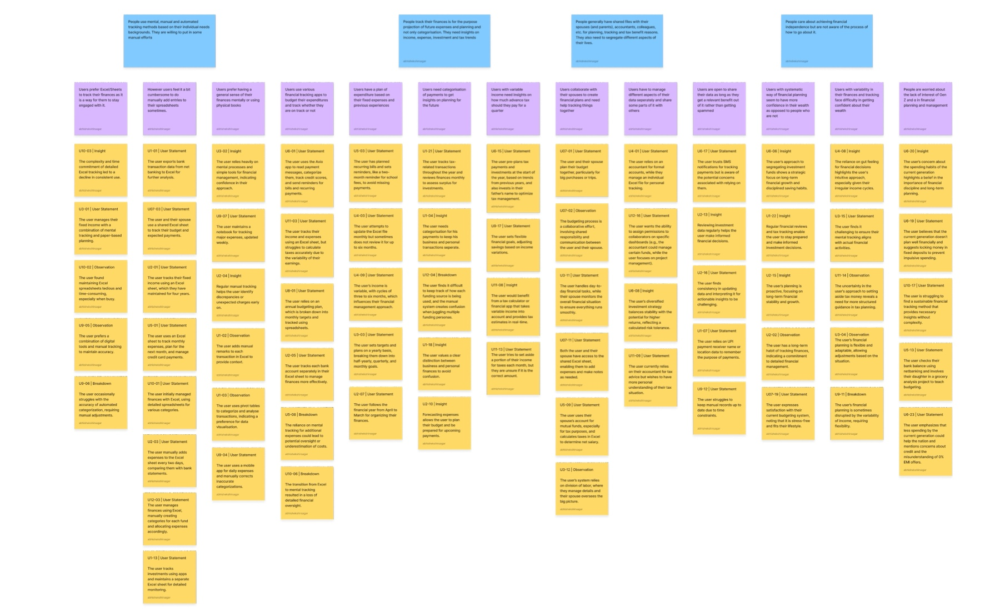
Insights
- Categories are personal. Automatic tracking is convenient, but people still want control over how their spending is grouped.
- Planning goes beyond this month. People think about homes, retirement and other goals, sometimes sharing information with family or advisors.
- Detail can add stress. People wanted clarity, not another system to maintain, especially with unpredictable incomes or expenses.
- Trust matters. People were cautious about sharing data with an app that seemed more interested in selling another service.
Making the data look interesting wasn't enough. It needed to fit different habits, leave room for personal judgement and be easy to come back to. That also meant letting go of my own categories. What felt obvious in my hostel expenses wasn't necessarily useful to someone managing a household.
SOLUTION
Where I Started
In the first project, I divided my expenditure into beverages, travel, packed food, canteen food and miscellaneous expenses. Each category got a colour, with the idea that both would eventually be customisable.

Then I started coding in p5.js, pulling data from a CSV file. The thickness of each coloured band changed with the amount spent. A list of payments was starting to become something I could recognise at a glance.

Taking It Forward
For the graduation project, I kept the wallpaper but stopped treating it as the whole solution. An app could hold the details and controls. Categorisation needed attention too: the visualisation would only make sense if the groups made sense to the person using it.
IDEATION
I explored dashboards, abstract wallpapers and categorisation through quick mockups. Then I tested them with 5 people to find out which ideas made sense, and which only made sense in my head.
Dashboards
The first direction was a web dashboard with transactions, treemaps and heatmaps. People saw its value, but felt they might check it weekly or monthly at first, then eventually forget about it.
The detail also felt overwhelming. This brought me back to accessibility: the information needed to be there when someone was making a decision, not just when they remembered to open a dashboard. A dashboard could answer questions, but only after someone had made the effort to visit it. That was the part I couldn't ignore.
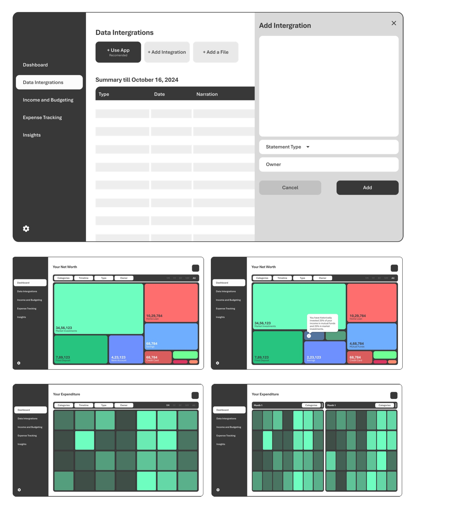
Abstract Visualisation Wallpapers
I tried De Stijl-inspired treemaps, mandala patterns and vector landscapes. The screen represented an income or budget, gradually filling with colour as people spent. The idea was to keep the data visible without making someone go looking for it.
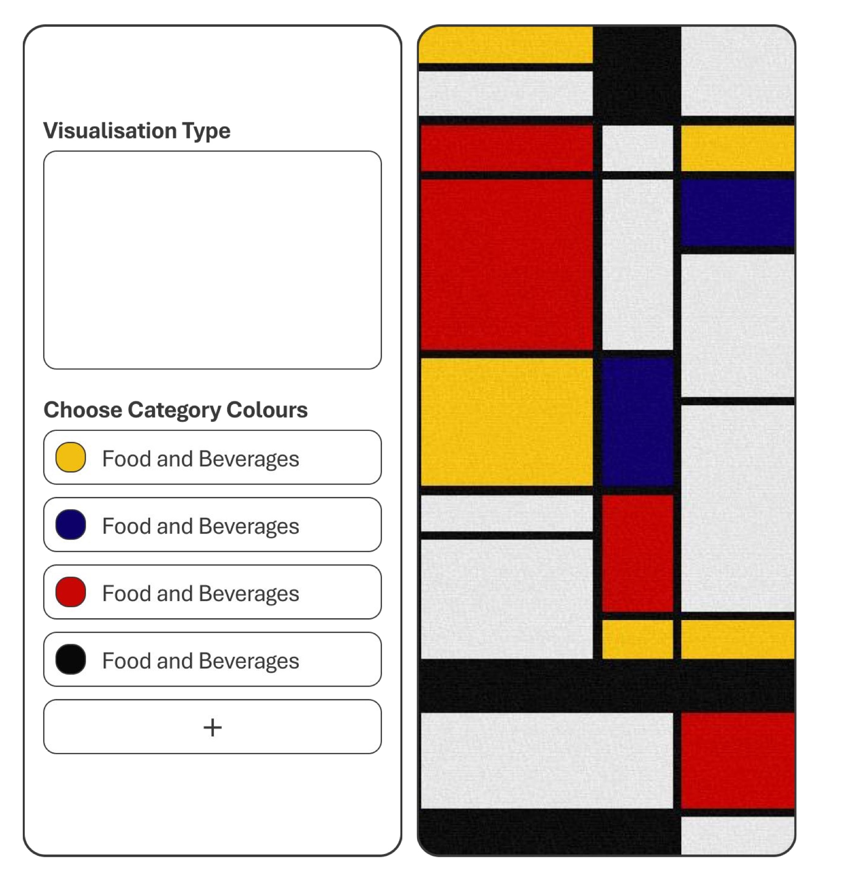
In one version, treemap blocks split into individual payments. People could see the unspent budget, but remembering category locations and decoding all those blocks took effort. It was an interesting visualisation, but the extra detail made it a poor wallpaper for quick decisions. I had tried to make each payment visible, when people were really looking for a broader sense of where they stood.
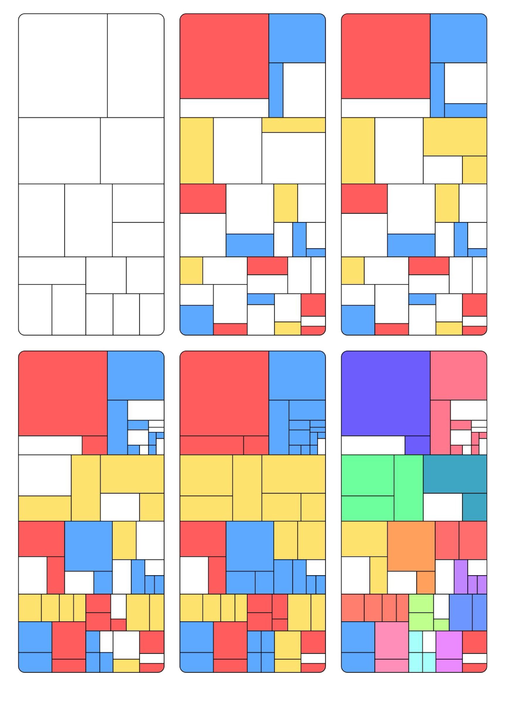
Categorisation
I explored automatic rules, payment patterns and AI, alongside manual options like swiping, stories-like interactions and a grapevine menu. The grapevine idea came from Uday and Hari's interaction techniques project.
I also asked people to divide their spending into two to five categories. Fewer categories brought out broader ideas like needs and wants; more categories brought more detail. It made sense to let people choose rather than impose one structure.
The First App
Then I brought the ideas into an app prototype. I asked people to find their highest-spending day, categorise a payment, and change categories for both a group and an individual transaction.
I had hidden categories inside wallpaper settings, so people couldn't find them. The monochrome design didn't distinguish the data, and the interactions weren't clear. Before adding anything else, I needed to fix the structure.
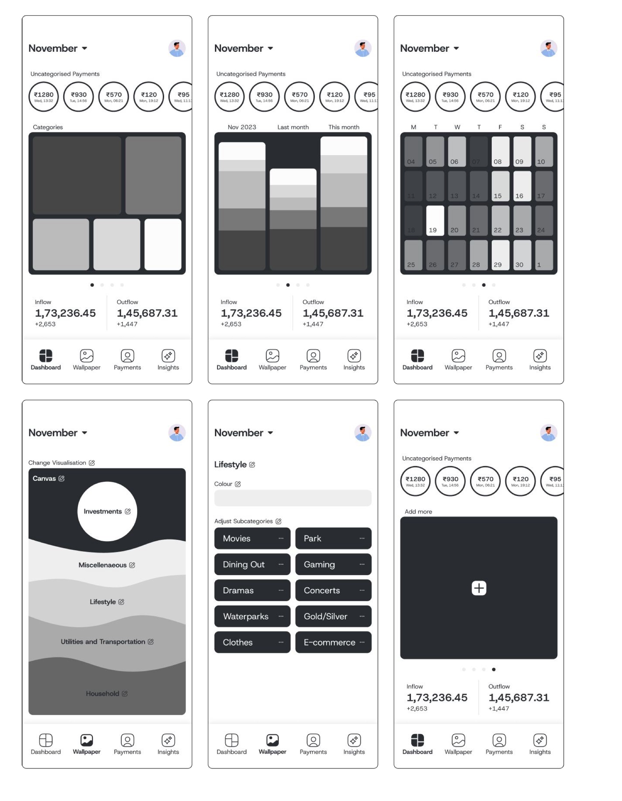
CONCEPT PROTOTYPE
Based on the feedback, I changed the structure, categorisation logic and visual design. Payments and categories got their own sections. The wallpaper became simpler, while the app kept the detailed views. The earlier version had followed the features I wanted to build. This time, I tried to follow the things people were looking for.
App Structure
I separated the dashboard, wallpaper, payments, categories and account settings. The proposed categorisation logic used recognisable terms and previous payment patterns, leaving uncertain payments for review. This wasn't a working bank-connected system yet.
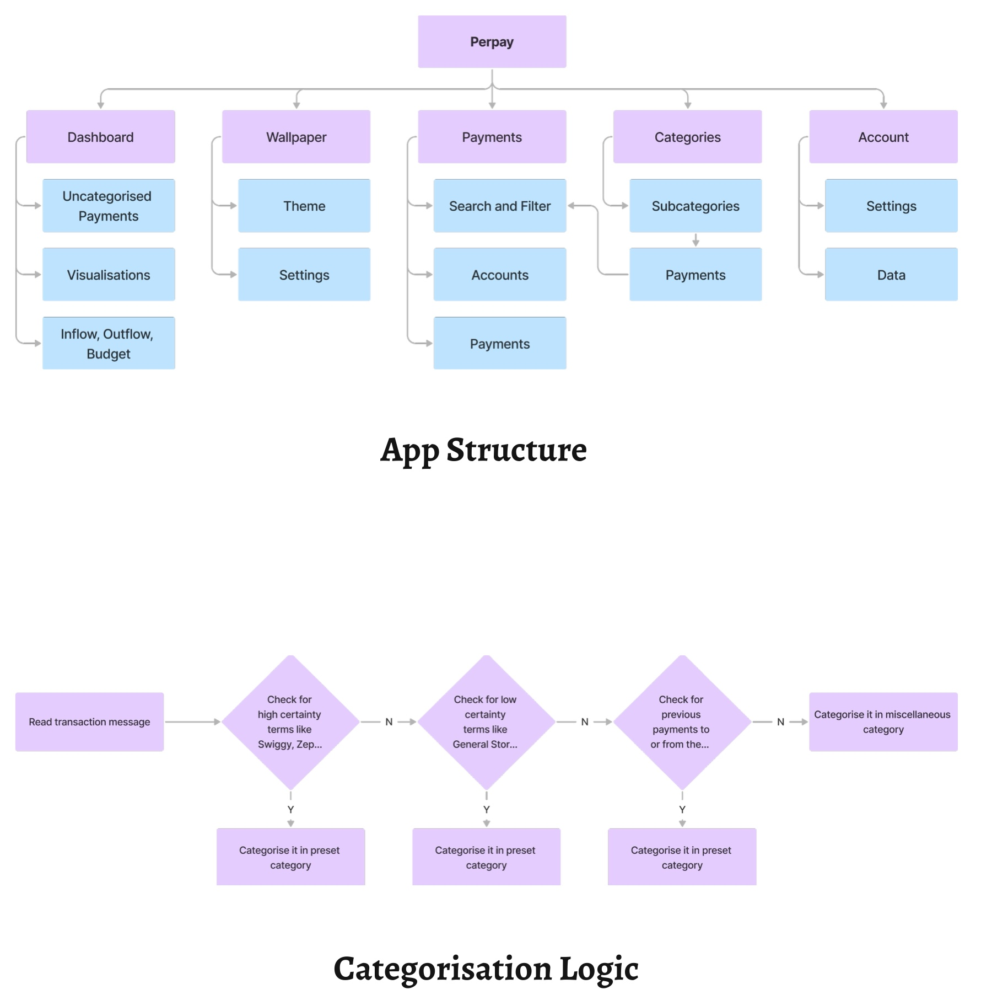
Visualisation Wallpaper
I simplified the wallpaper into layers for essential, recurring, lifestyle and uncategorised expenses. The canvas represented income or budget, the circle showed savings and investments, and the black area was the month's remaining wiggle room.
Instead of every payment, it showed the relationship between spending and what was left. The details didn't all have to live on the home screen.
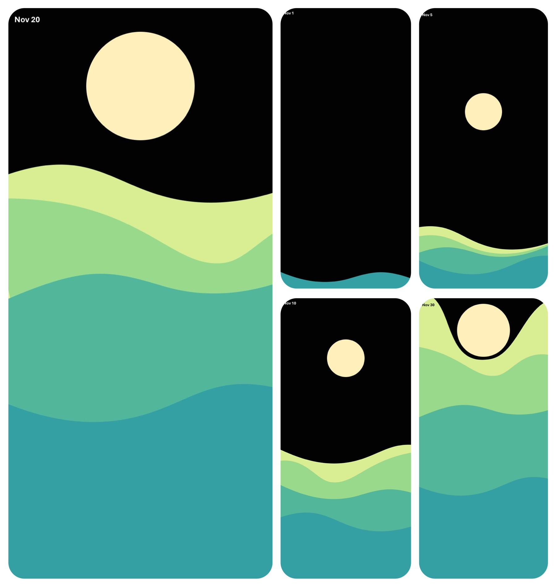
Dashboard
The dashboard combined a treemap, stacked columns, a heatmap and a location-based chart, with a shared time range selector for comparisons.
A stories-like carousel held payments needing categorisation. Recipient, location, date and time helped people remember what they were for. Monthly inflows, outflows and the budget sat below the charts.
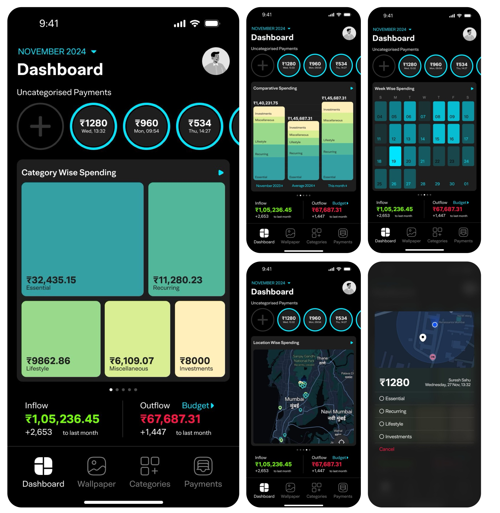
Wallpaper Setup
People could choose themes and category colours, with community themes and live wallpapers included in the concept. I wanted it to feel like a wallpaper someone would actually choose, not just a chart on their phone.
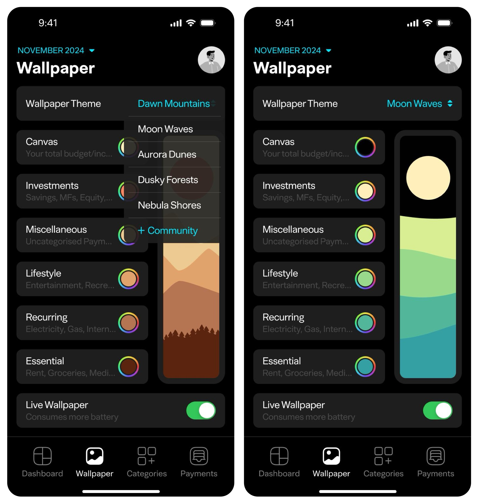
Categories
The defaults were Essential, Recurring, Lifestyle and Investments, with uncategorised payments kept separately. People could rename groups, move or edit subcategories and set their own rules.
Buying food because you're hungry and ordering something because you're craving it don't necessarily belong in the same category, even if both payments went to the same place.
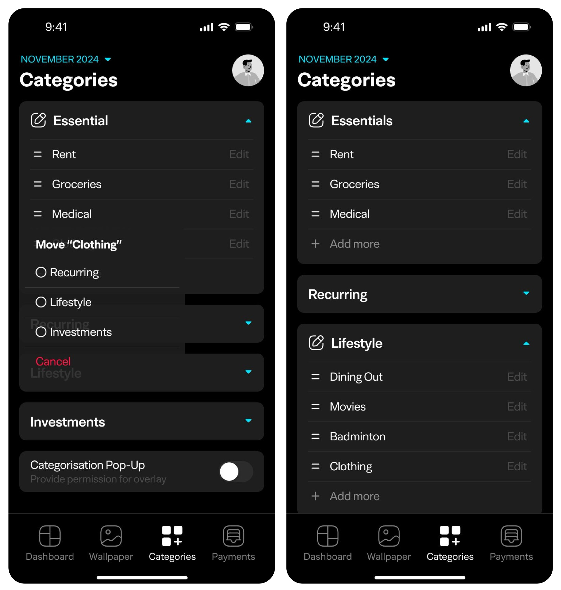
Payments
A separate payments view offered search, filters and category corrections for individual transactions. The system could do the repetitive work, but the final judgement needed to stay with the person whose money it was.
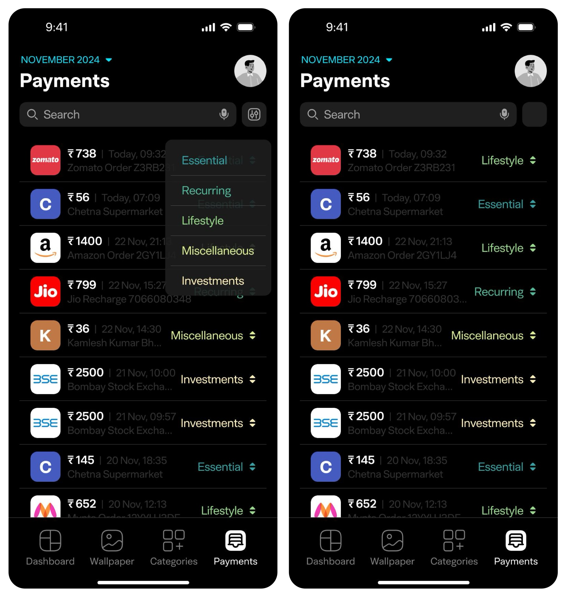
USER TESTING
I tested the revised prototype with 10 people aged 35 to 50, using the think aloud method to understand what they expected and where they got stuck.
The tasks covered both the application and the visualisations:
- Find the day on which the most expenses were made.
- Categorise the first uncategorised payment.
- Move Clothing from Essential to Lifestyle.
- Move the latest Zomato payment from Essential to Lifestyle.
- Explain the series of visualisations.
- Match the visualisations.
After the first two sessions, I fixed recurring navigation and categorisation problems. Later sessions were easier in some respects, but people still took time finding options and interpreting some visuals.
What Worked and What Didn't
Nine participants changed a subcategory without a difficulty noted; one took some time. Changing an individual payment's category was harder, with some struggling to find the option despite knowing what they wanted.
Nine explained the visualisation series correctly; one showed confusion. Three had minor confusion in the matching task. Understanding a visual and knowing what to do next were still different problems.
This tested the interface, not whether people would spend less or build a lasting habit. That would need a working prototype and a longer study. It was encouraging that people could explain the visuals, but I couldn't treat that as proof that the original problem was solved.
Task observations
| Participant | Task 1 | Task 2 | Task 3 | Task 4 | Task 5 | Task 6 |
|---|---|---|---|---|---|---|
| 1 | Took some time | Success | Success | Struggled to locate option | Explained correctly | Minor confusion while explaining |
| 2 | Success | Success, minor confusion | Took some time | Success | Explained correctly | Explained correctly |
| 3 | Took some time | Success | Success | Took some time | Explained correctly | Minor confusion while explaining |
| 4 | Success, trouble locating budget | Success | Success | Struggled with navigation | Explained correctly | Explained correctly |
| 5 | Took some time | Took some time | Success | Success | Explained correctly | Explained correctly |
| 6 | Success | Success | Success | Success | Explained correctly | Explained correctly |
| 7 | Success | Success | Success | Struggled to complete task | Explained correctly | Explained correctly |
| 8 | Success | Took some time | Success | Success | Minor confusion while explaining | Explained correctly |
| 9 | Took some time, initial confusion | Success | Success | Took some time | Explained correctly | Minor confusion while explaining |
| 10 | Success | Struggled to assign category | Success | Success | Explained correctly | Explained correctly |
REFLECTION
Feedback from the Jury
The jury asked questions the interface hadn't answered. Was this about expenses or investments? Were the target group's habits already established? What could someone actually decide after seeing these visuals?
They suggested simpler navigation, more flexible categorisation and more feedback on the larger goals. Making a visual understandable wasn't the same as making it useful.
I felt the system should be a guiding light, not drive people's decisions. But that left a question: was I answering their questions clearly enough for them to decide for themselves?
Taking It Further
Next would come a working prototype and a longer study, alongside better onboarding, simpler navigation and ways to share information with family or advisors.
Digital Wellbeing integration, open source and AI-assisted insights were future possibilities, not finished features. The main question remained: would having this information around help people understand their money in everyday life?